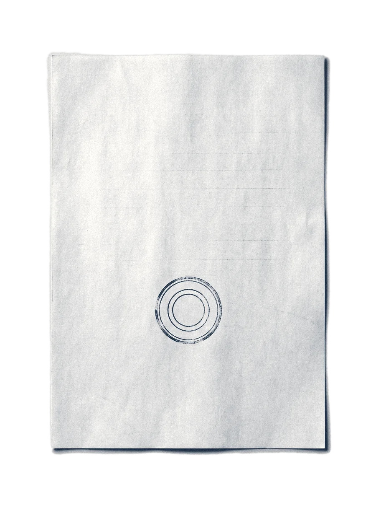
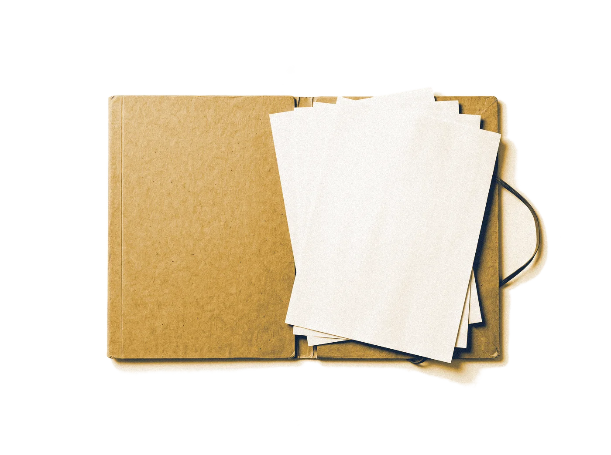

Biblioteca de cenas · molde
Cada slide é um arquétipo que se troca, se apaga ou muda de lugar sem refazer a trilha.
imagem gerada por IA
Escolha
Cada palavra sai de um leque
- próxima
- melhor
- única
- palavra
- resposta
- frase
valores ilustrativos
Número
A grade se corrige e o placar sobe
0 de 10
itens aprovados na revisão
ilustrativo
Comparação
Duas versões sem nome, uma escolhida
A
versão sem nome
B
versão sem nome
Ramos
A trilha se divide com o assunto
dão ritmo
à fala
provam
a ideia
O roteiro escolhe o arquétipo pela função do slide.
Respiro
Uma ideia por tela.O resto é fala.
Objetos
O pedido ao lado do material
Pedido
Monte o deck a partir do roteiro aprovado.
Material



imagens geradas por IA
Viagem
O material vai para a pasta do deck

decks/meu-deck/
deck.html
briefing.md
midia/
heroi.webp
creditos.json
imagem gerada por IA
Fios
Cada linha aponta para a sua fonte
motor/cenas.js
tema.css
briefing.md
deck.html
Apagar um slide refaz a trilha.
Cor e fonte vêm do tema.
Este slide prova uma ideia só.
sem fonte: conferir
Cada dado tem a fonte anotada.
Demonstração
O vídeo toca dentro do slide
o holofote aponta, a legenda explica
Vídeo de exemplo feito por código. Troque pela gravação do seu caso.
Para usar o molde
Troque o texto,mantenha a trilha
- 1Escreva o texto e a mídia nas sections.
- 2Apague a section e a linha da lista.
- 3Rode
./ap sondare./ap paradas.